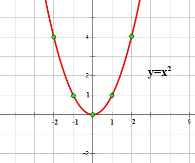
Квадратична функція
Основні властивості квадратичної функції, парабола та її вершина

Основні властивості квадратичної функції, парабола та її вершина
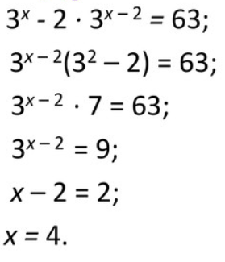
Методи розв'язування показникових рівнянь та систем, зведення до спільній основи.
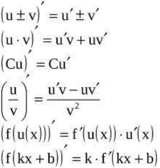
Геометричний та фізичний зміст похідної, правила диференціювання.
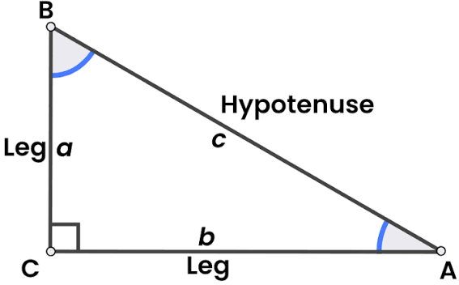
У прямокутному трикутнику квадрат гіпотенузи дорівнює сумі квадратів катетів
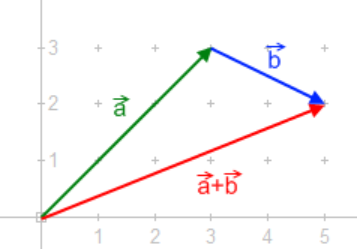
Операції над векторами, скалярний добуток та кут між векторами.
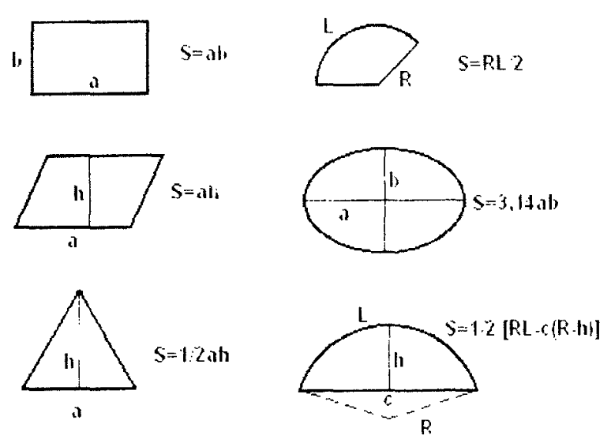
Формули обчислення площі трикутника, паралелограма, трапеції та круга.
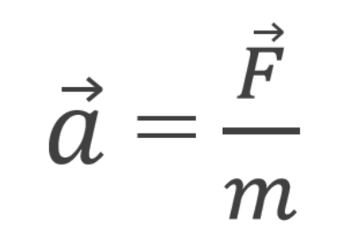
Основи класичної механіки: інерція, сила та протидія
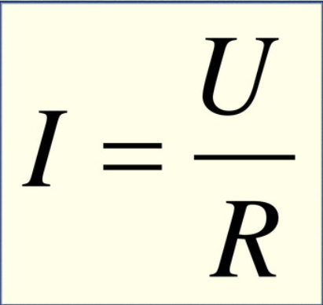
Залежність сили струму від напруги та опору провідника.
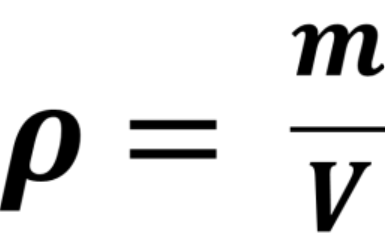
Молекулярно-кінетична теорія, тиск і температура ідеального газу.
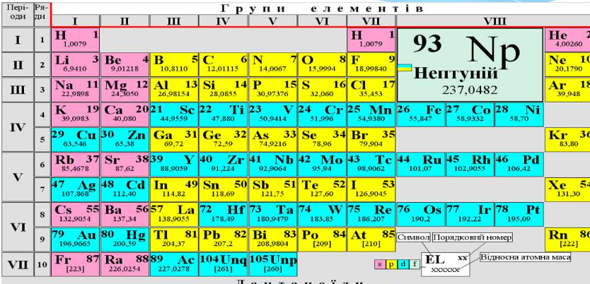
Будова періодичної системи елементів та періодичність їхніх властивостей
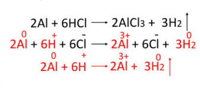
Процеси окиснення та відновлення, електронний баланс реакцій.
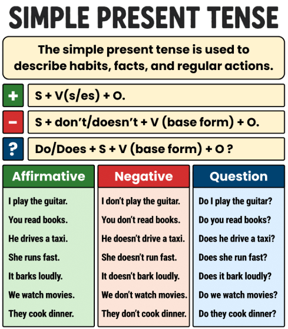
Теперішній простий час для вираження регулярних та постійних дій
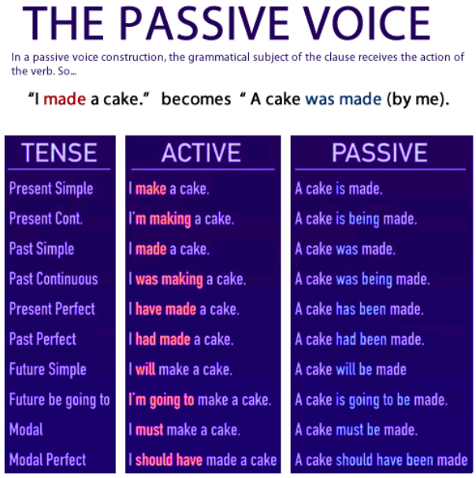
Утворення та використання пасивного стану в різних часових формах.
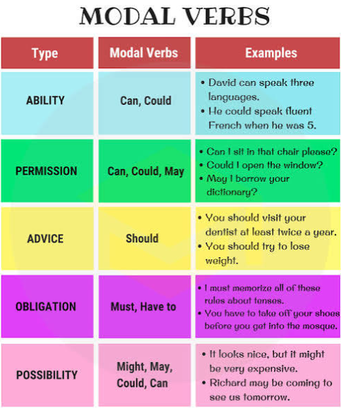
Модальні дієслова must, should, can, may та особливості їхнього вживання.
Процеси утворення гірських систем, класифікація гір за висотою та віком
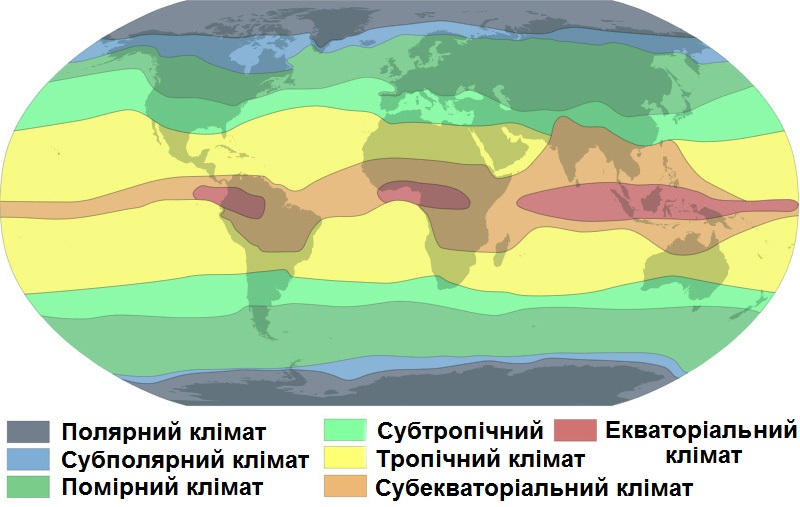
Характеристика основних та перехідних кліматичних поясів планети.